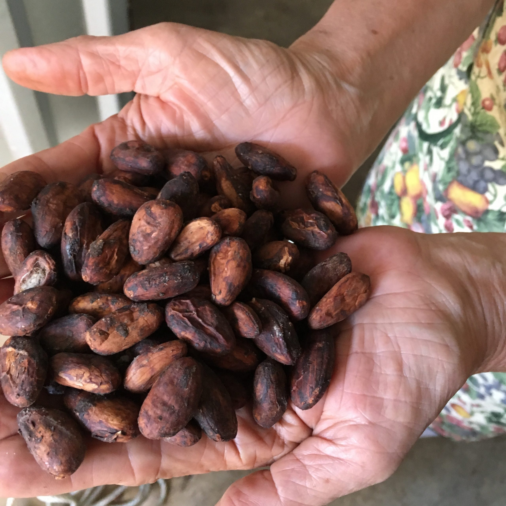
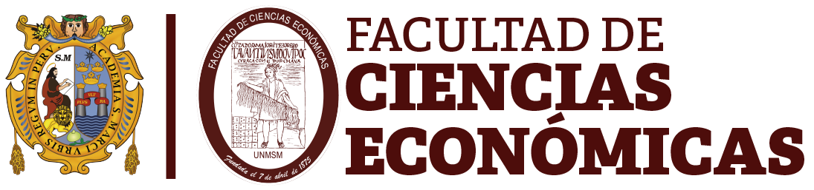

Economía
La producción agrícola varía de acuerdo con la alturas que tiene el departamento, por lo que se encuentran productos tanto del atiplano como de la costa. Entre estos cultivos están: trigo, avena, cebada, papa, frijol, maíz, arroz, banano, caña de azúcar, cacao y otros.
También hay crianza de ganado vacuno, caballar y bovino, y es uno de los departamentos donde mayor producción de lana existe, la cual se vende en gran parte en los departamentos de Totonicapán y Quetzaltenango (Diccionario Municipal de Guatemala, 2001).
Entre sus artesanías populares se encuentran tejidos de lana y algodón, cestería, muebles de madera, instrumentos musicales, productos de cuero, jarcia, cerámica, palma y pirotecnia (Diccionario Municipal de Guatemala, 2001).
Los municipios del suroccidente han sido afectados por el contrabando de productos mexicanos. Sus sistemas de sobrevivencias han sido golpeados por tráficos de todo tipo, género y especie. Esto repercute en sobreexplotación de mano de obra infantil, prostitución y delincuencia organizada (Lara, C., Rodríguez, F., García, C. y Esquivel, A., s.f.).
